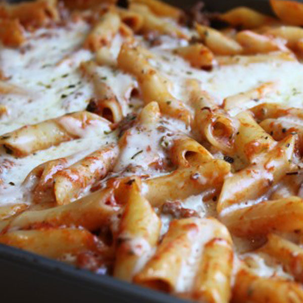

Ziti

Lets go!
Ingredients
- 1 pound ziti
- kosher salt
- 1 tablespoon EVOO
- 1 pound ground beef
- 1 onion chopped
- 4 garlic cloves chopped
- 1 tablespoon italian seasoning
- 4 cups pasta sauce
- 8 ounces mozzarella cheese shredded
- 1 cup ricotta
Instructions
- Preheat the oven to 350°F.
- Heat a large pot of salted water (for every 2 quarts of water, one tablespoon of salt) to a strong boil.
Add the pasta and cook at a rolling boil, uncovered, until the pasta is al dente—edible but still a little firm to the bite.
Drain the pasta through a colander. Toss with a little olive oil so the pasta does not stick together while you make the sauce.
- While the water is heating in the previous step, start on the sauce. Heat a tablespoon of olive oil in a large sauté pan on medium-high heat.
When the oil is shimmering hot, add the bulk sausage or ground meat. Break up any large chunks of sausage as it cooks. Brown well.
Don't stir that often or it will be more difficult for the meat to brown. If you are using ground beef or pork instead of sausage, sprinkle with a little salt.
- When the meat is mostly browned, add the onions and stir well to combine. Sauté everything until the onions are translucent and beginning to brown, about 4 to 5 minutes.
Add the garlic and Italian seasoning and stir to combine. Cook 1 minute, then add the tomato sauce and stir well. Bring to a simmer.
Taste the sauce and season with salt and pepper, if needed.
- Spread a thin layer of the sauce in the bottom of a 9x13-inch casserole pan, then dot the surface with half the ricotta cheese. Ladle a spoonful of sauce into the pasta,
stir it well and then add the pasta into the casserole.Pour the rest of the sauce over the pasta, dot the remaining ricotta cheese over the pasta, and sprinkle on top both
the mozzarella and the Parmesan cheese. At this point, you can cool, cover, and refrigerate or freeze to make ahead.
- Bake uncovered in the oven at 350°F until the top is lightly browned and the cheese melted, about 20 to 25 minutes. Let stand for 10 minutes before serving.
Hope you enjoy!